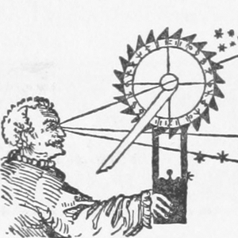

Lesson Directory
We invite you to browse around. If you can’t find a skill, technology, or tool covered here, please let us know!
Application Programming Interfaces (APIs)
APIs let you programmatically request specific information from a website. Learn how to use them.
-

Intro to the Zotero API
Amanda Morton
-

Creating New Items in Zotero
Amanda Morton
-

Counting Frequencies from Zotero Items
Spencer Roberts
Data Management
You put a lot of effort into your research. Make sure that effort lasts by adopting sustainable strategies to your code, your data, and your research processes. A little bit of planning can save you a lot of time.
-

Preserving Research Data
James Baker
-
Sustainable Authorship in Plain Text using Pandoc and Markdown
Dennis Tenen and Grant Wythoff
-

Getting Started with Markdown
Sarah Simpkin
Data Manipulation
Just like it sounds, learn how to use programming to change, move, clean, or count data. These are essential techniques for preparing data to be used with various tools.
-

Introduction to the Bash Command Line
Ian Milligan and James Baker
-
Counting and mining research data with Unix
James Baker and Ian Milligan
-
Cleaning Data with OpenRefine
Seth van Hooland, Ruben Verborgh, Max De Wilde
-

Understanding Regular Expressions
Doug Knox
-
Cleaning OCR’d Text with Regular Expressions
Laura Turner O’Hara
-

Transliterating non-ASCII Characters with Python
Seth Bernstein
-
Generating an Ordered Data Set from an OCR Text File
Jon Crump
-
Using Gazetteers to Extract Keywords from Sets of Free-Flowing Texts
Adam Crymble
Distant Reading
Computational tools allow you to make sense of a lot of documents at once. The Naive Bayesian is a machine learner. Given some examples of the kind of thing you are interested in, it can quickly find many more. A topic modeling tool takes a single text (or corpus) and looks for patterns in the use of words; it is an attempt to inject semantic meaning into vocabulary. It can help you to very quickly find ‘topics’ in a large corpus of texts.
-
Corpus Analysis with Antconc
Heather Froehlich
-

Supervised Classification with a Naive Bayesian
Vilja Hulden
-

Getting Started with Topic Modeling and MALLET
Shawn Graham, Scott Weingart, & Ian Milligan
Getting Ready to Program
If you’re new to programming in python, you’ll first need to set up a programming environment. For the most flexibility, we recommend that you follow these instructions on setting up python on the command line.
Many of the tutorials require that you install one or more python modules to save you time coding. If this is a new concept for you, read about how to install Python modules in the lesson below.

Linked Open Data
Many research datasets are published as Linked Open Data, a format that allows flexible querying and interlinking of complex sources. Get an introduction to manipulating these databases by working with some real-world examples.

Mapping and GIS
Mapping can be an effective way to visualize and interpret historical data. These lessons introduce historical geographic information systems (GIS) using open source software.
-
Intro to Google Maps and Google Earth
Jim Clifford, Josh MacFadyen, Daniel Macfarlane
-
Installing QGIS 2.0 and Adding Layers
Jim Clifford, Josh MacFadyen, Daniel Macfarlane
-

Creating New Vector Layers in QGIS 2.0
Jim Clifford, Josh MacFadyen, Daniel Macfarlane
-

Georeferencing in QGIS 2.0
Jim Clifford, Josh MacFadyen, Daniel Macfarlane
Network Analysis
Network visualizations can help humanities scholars reveal hidden and complex patterns and structures in textual sources.

Omeka Exhibit Building
Learn how to present historical materials online.

Web Scraping
Learn how to use programming to download material from the Internet in a controlled, semi-automated manner.
-

Datamining the Internet Archive Collection
Caleb McDaniel
-
Automated Downloading with Wget
Ian Milligan
-

Applied Archival Downloading with Wget
Kellen Kurschinski
-
Intro to Beautiful Soup
Jeri Wieringa
-
Downloading Multiple Records Using Query Strings
Adam Crymble
Introduction to Python
The Programming Historian was originally written as a series of (mostly) Python lessons that were intended to be followed in sequence.
- Python Introduction and Installation
- Setting Up an Integrated Development Environment for Python for Mac, Linux, or Windows
- Understanding Web Pages and HTML
- Working with Text Files in Python
- Code Reuse and Modularity in Python
- Downloading Web Pages with Python
- Manipulating Strings in Python
- From HTML to a List of Words (part 1)
- From HTML to a List of Words (part 2)
- Normalizing Textual Data with Python
- Counting Word Frequency with Python
- Creating and Viewing HTML Files with Python
- Output Data as an HTML File with Python
- Keywords in Context (Using n-grams) with Python
- Output Keywords in Context in an HTML File with Python